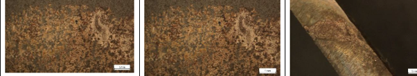
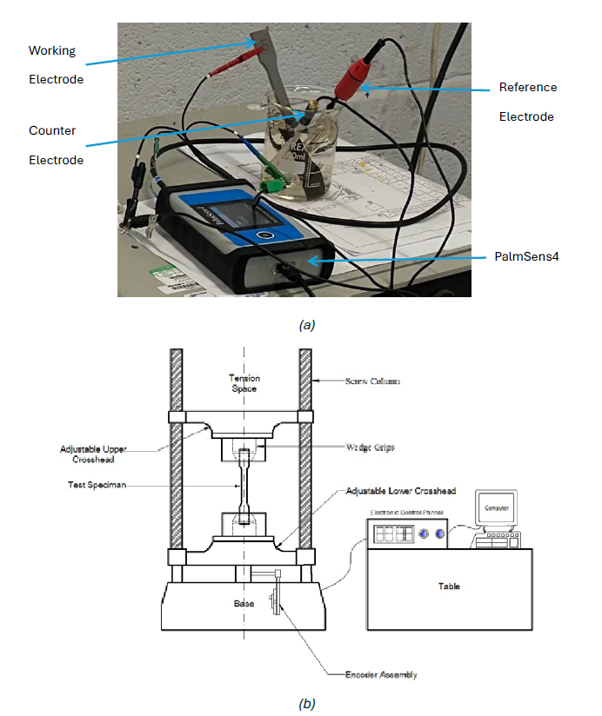
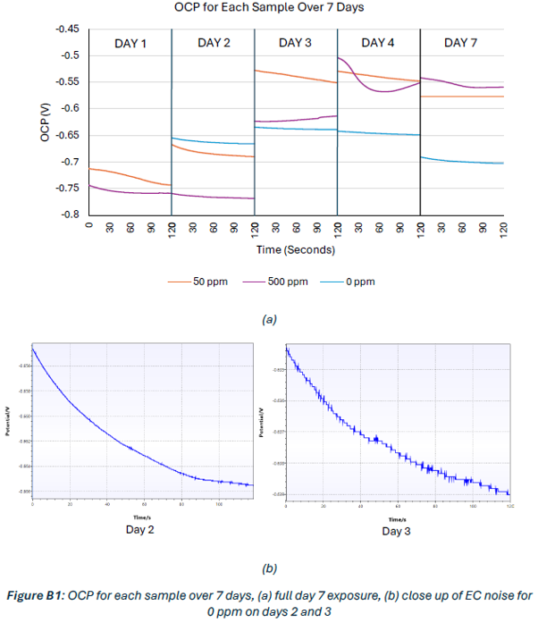
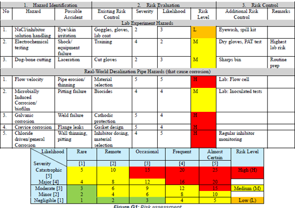
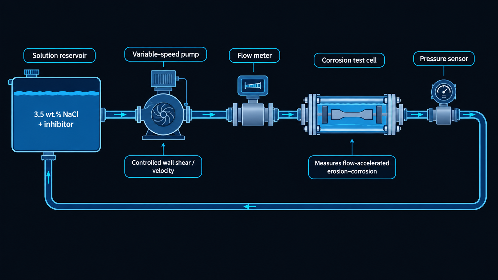

Desalination infrastructure relies heavily on carbon-steel piping to transport saline seawater and concentrated brine. Chloride ions disrupt protective oxide layers and accelerate wall thinning, pitting, leakage, unplanned maintenance, and potentially costly environmental or safety incidents.
This study evaluated benzotriazole–tetrapotassium pyrophosphate (BTA-TKPP) as a corrosion inhibitor for mild steel immersed in 3.5 wt.% NaCl, representing a controlled seawater environment.

Mild-steel dog-bone specimens were exposed to 3.5 wt.% sodium chloride solution at 15°C under three inhibitor conditions: 0 ppm, 50 ppm, and 500 ppm BTA-TKPP. Specimen gauge sections were ground, degreased, rinsed, and dried before immersion to improve surface-finish consistency.
A three-electrode electrochemical cell was used: the mild-steel specimen acted as the working electrode, with an Ag/AgCl reference electrode and platinum counter electrode. Open-circuit potential, linear polarisation resistance, and electrochemical impedance spectroscopy were measured daily over days 1–4 and day 7.
Linear polarisation resistance was interpreted using the Stern–Geary relationship, where \(i_{\mathrm{corr}}\) is corrosion-current density, \(B\) is the Stern–Geary constant, and \(R_p\) is polarisation resistance. A higher \(R_p\) generally indicates a stronger barrier to charge transfer and lower corrosion activity.
Open-circuit potential trends revealed visibly different film behaviour across the three inhibitor conditions. The uninhibited specimen became more active and noisy, consistent with oxide dissolution followed by porous corrosion-product accumulation.
The 50 ppm inhibitor condition showed an initially increasing potential and relatively low noise, indicating early protective-film formation. However, the trend later declined, suggesting that the low-dose film did not remain stable over the full exposure period.
The 500 ppm condition stabilised at more noble potential values by day 7, indicating a more persistent surface film. This did not automatically translate into the lowest measured corrosion rate, showing that film stability and inhibition efficiency are not necessarily identical.
Here, \(CR_0\) is the corrosion rate of the uninhibited condition and \(CR_{\mathrm{inh}}\) is the rate under inhibitor exposure.

The electrochemical results showed a clear dose-dependent response, but not a simple “more inhibitor equals better protection” relationship. The uninhibited mild steel reached an average day-7 corrosion rate of approximately 0.109 mm/year.
| BTA-TKPP dose | Day-7 corrosion rate | Average inhibition efficiency |
|---|---|---|
| 0 ppm | 0.117 mm/year | — |
| 50 ppm | 0.061 mm/year | 61% |
| 500 ppm | 0.070 mm/year | 39% |
The 50 ppm condition delivered the strongest overall inhibition, whereas the higher 500 ppm dose formed a more stable final film but produced lower average protection. This behaviour is consistent with excessive inhibitor concentration producing molecular clustering and imperfect films that remain vulnerable to chloride attack.
EIS fitting to a Randles circuit showed charge-transfer resistance increasing until approximately day 3 before declining, supporting the interpretation of film compaction followed by partial breakdown and increased porosity.
Tensile testing after seven days of exposure showed very similar ultimate tensile strengths across all specimens — between approximately 456 MPa and 462 MPa. This indicates that the short immersion period did not produce sufficient bulk cross-sectional damage to significantly affect tensile strength.
A reduction in elongation was observed for the 50 ppm condition, despite its stronger electrochemical inhibition performance. One possible explanation is that a protective surface film can locally constrain near-surface plastic deformation and contribute to more brittle surface behaviour before bulk tensile strength is affected.
Macroscopy showed the greatest visible rust on the uninhibited specimen and reduced surface corrosion with inhibitor addition. SEM–EDX observations identified detached iron-oxide features, with more frequent film fragments at higher inhibitor dosage — consistent with thicker or more continuous inhibitor/oxide films that can still detach locally.

The laboratory work captured the fundamental chloride-driven electrochemical corrosion mechanism, but the risk assessment identified flow-accelerated erosion-corrosion as the most significant operational threat in a real desalination pipeline.
In service, high wall shear stress and turbulent brine flow can strip protective films, accelerate mass transport, and increase steel loss far beyond static immersion behaviour. This can cause rapid wall thinning, leaks, rupture, unplanned shutdowns, environmental release, and costly repair.
This distinction was central to the engineering interpretation: a laboratory inhibitor result should not be transferred directly into operational pipeline dosing strategy without validation under representative flow conditions.
The main recommendation was to extend the experiment from static immersion to a controlled recirculating flow-loop test. This would allow flow velocity, wall shear stress, pressure, and inhibitor performance to be evaluated under more realistic desalination pipeline conditions.
Longer 30–90 day exposure campaigns with sacrificial samples would also make it possible to correlate electrochemical signals with progressive surface degradation, corrosion morphology, and any meaningful change in mechanical properties over time.
Finally, tensile testing should use an extensometer rather than crosshead displacement for reliable Young's-modulus measurement, and each exposure condition should include repeat specimens to quantify scatter and statistical significance.

The complete report includes electrochemical data, corrosion-rate calculations, tensile analysis, microscopy, EIS fitting, uncertainty discussion, and the desalination pipeline risk assessment.
↓ Download Full Report (PDF) ← Back to Modules